WeNitro Live Social Platform
A dated, screen-by-screen record of the React Native Expo experience, its live Supabase backend, authenticated people discovery, Vibes, stories, direct messaging, groups, communities, and profile workflows.
Prepared 25 August 2026 · Expo Web, Android, iOS · Live Supabase PostgreSQL, Storage and Realtime
Report map
The screenshots were used as visual references. Product behavior, validation, responsiveness, persistence, and cross-platform constraints were implemented rather than copied as static imagery.
From wireframe to client-ready product surface
WeNitro is now a coherent mobile interface centered on finding people for real-world intent: study partners, sport partners, local circles, communities, shared activities, and lightweight social content.
- Premium Manrope typography and consistent iconography.
- Connected Home, Activities, Vibes, Host, Chat, Profile, and Communities.
- Dynamic community search, filtering, membership, creation, posts, and reactions.
- Database SQL and OpenAPI contracts ready for Supabase connection.
Community visual references received
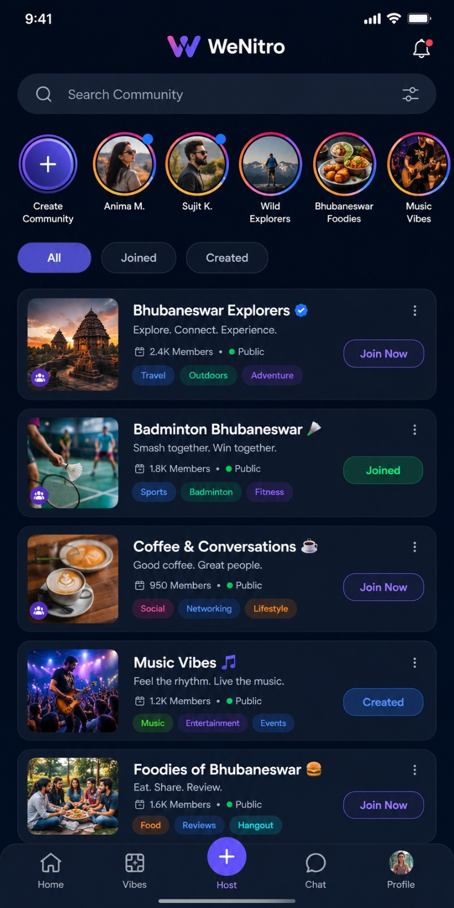
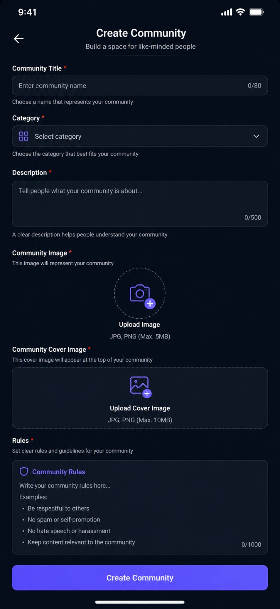
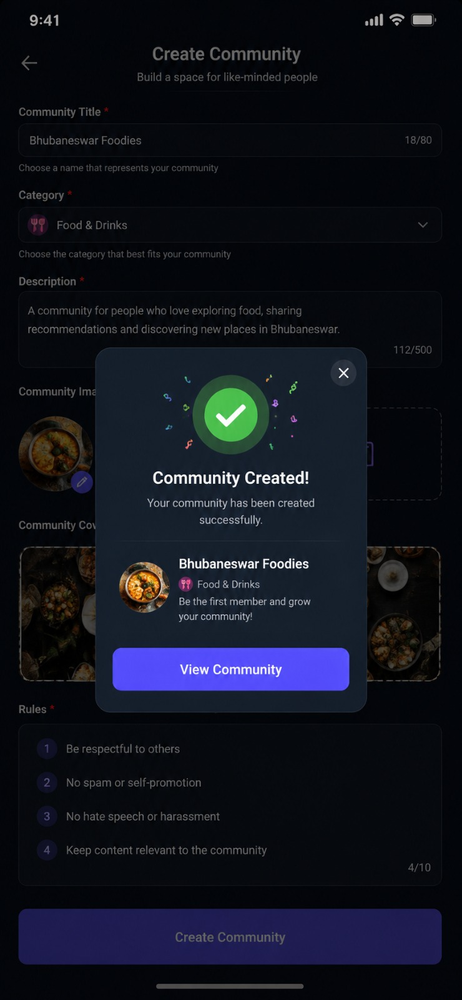
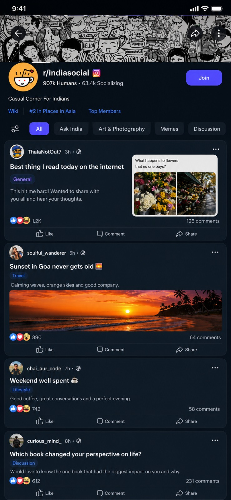
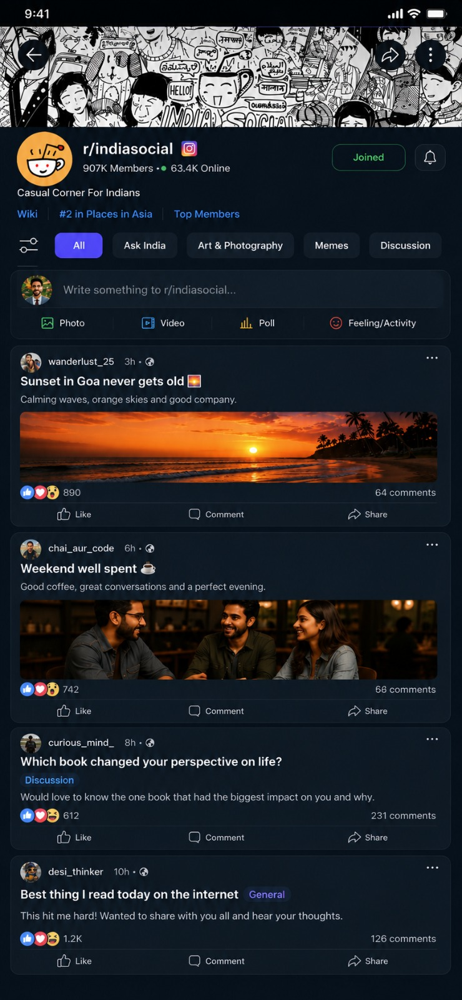
Reusable visual and interaction system
Typography
Manrope Regular through ExtraBold is bundled so Vercel and native builds render the same hierarchy.
Color and depth
Bright WeNitro purple is paired with white product surfaces and deep navy community surfaces. Green communicates trusted or joined states.
Control language
Ionicons power search, filters, media upload, reactions, messaging, and navigation with stable dimensions.
Community base: #06111F
Community card: #101E30
Success: #19D784
Text: #FFFFFF / #AAB3C1
Radius: 6–18px
Font: Manrope
Trust begins before the main application
Login and signup
- Email and password validation.
- Google continuation and legal links.
- Interactive stakeholder demo entry.
- Real-face social proof and illustration.
Onboarding
- Name, username, date of birth, gender, interests, and profile photo.
- Persisted completion state feeds Profile.
All screens share responsive framing, typography, sound/haptic feedback, and demo persistence.
A dense, scan-friendly discovery dashboard
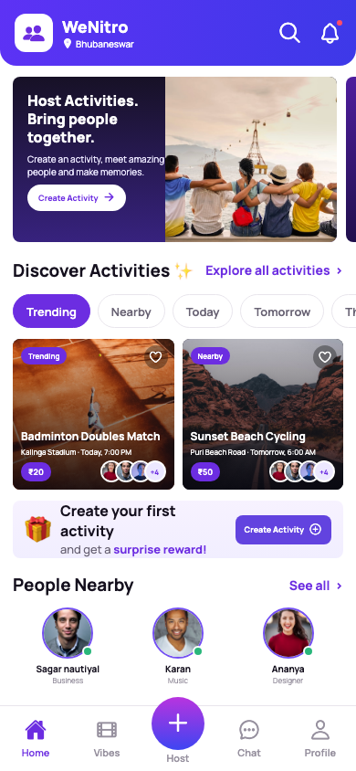
- Location header with search and notifications.
- Host and Nitro Store promotions use real imagery.
- Trending and nearby discovery states.
- Activity cards include price, people, place, and time.
- People Nearby, Communities, Tribe, Vibes, and rewards.
- Each section routes into its module.
Production QA snapshot · 24 August 2026
Intent-first activity discovery
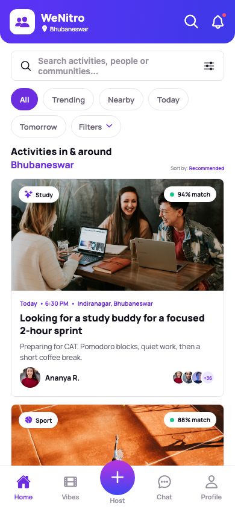
Activities are searched and segmented by time and proximity. Cards communicate intent, match score, host, participants, description, and place without turning the product into a conventional event marketplace.
- Study buddy, sport partner, and co-work examples.
- Indian geography and INR contribution values.
- Search and filters operate on persisted data.
- Selection opens the complete detail workflow.
Decision-ready activity context
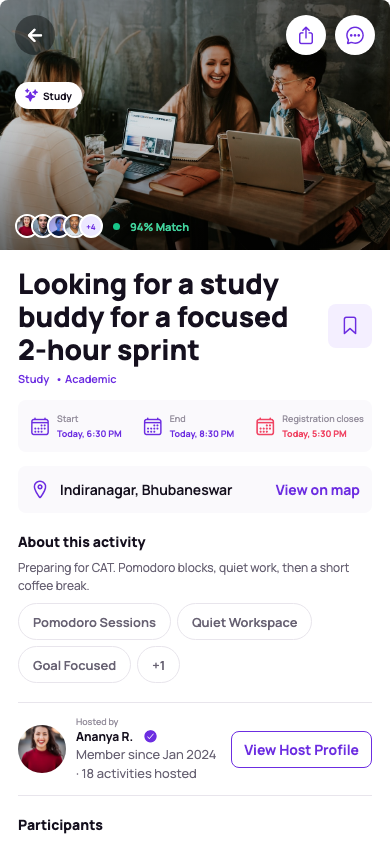
- Hero media, category, people, and match score.
- Start, end, and registration closing times.
- Location, purpose, host trust, participants, and terms.
- Comments, activity Vibes, feedback, and recommendations.
- Like, save, and Join update live state.
Activities, participants, comments, likes, saves, and community relationships each have PostgreSQL ownership and RLS rules.
Immersive, social-first vertical media
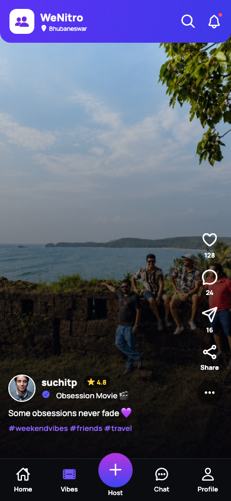
Vibes now load a multi-item live sequence from PostgreSQL and Supabase Storage. Users swipe or use accessible controls to move between creators while reactions, comments, and system sharing persist against the active Vibe.
- Full-bleed user-uploaded media.
- Vertical sequence with position indicators.
- Live creator identity and comment counts.
- RLS-protected likes, comments, and share receipts.
- Dynamic Profile Vibes grid.
Three explicit creation paths
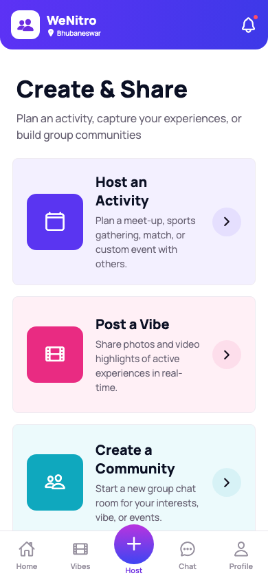
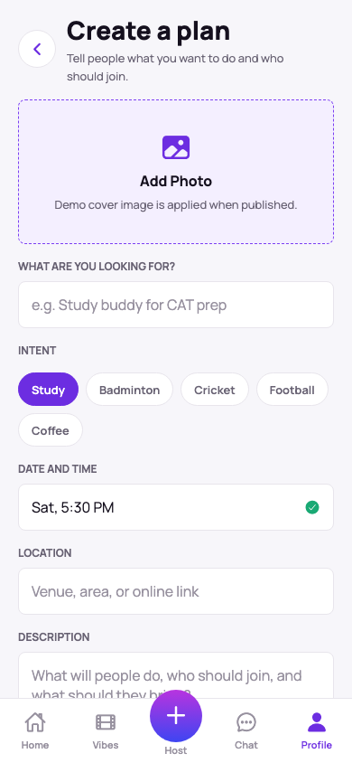
People and groups connected to intent
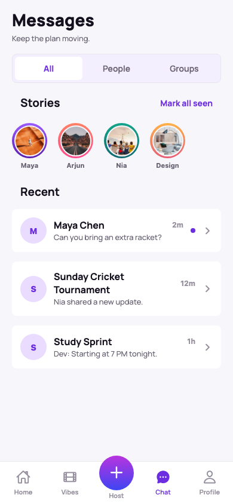
- Live discoverable profiles with direct-chat creation.
- RLS-scoped direct and group conversations.
- Realtime message subscription and media attachments.
- UI group creation with actual member UUIDs.
- Storage-backed stories and view receipts.
Two authenticated users were exercised across the same direct thread, and three users were verified inside two live groups.
Identity, trust, history, and contribution
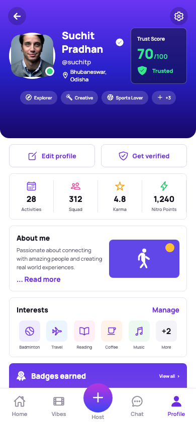
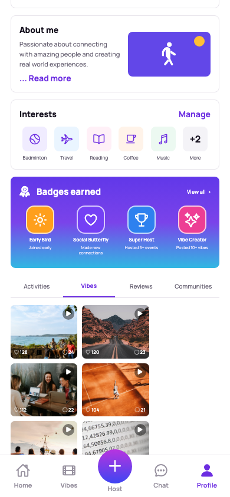
- Editable image, verification, location, roles, and trust score.
- Activities, Squad, Karma, and Nitro metrics.
- About, interests, badges, Vibes, reviews, and communities.
Searchable local circles with live membership
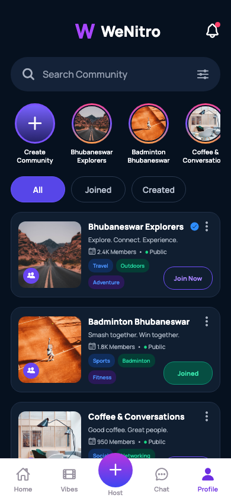
- Dark header, search, notifications, and filters.
- Create and community story rings.
- All, Joined, and Created scopes.
- Search matches name, category, and tags.
- Join statuses update counts and storage.
- Cards open the full community feed.
The implementation snapshot at left was captured from the compiled Expo Web build on 24 August 2026. The original reference remains documented on page 4.
Complete, validated, image-backed creation
- Title and description character limits.
- Domain category selector.
- Avatar and cover Image Picker uploads.
- Editable community rules.
- Required-field validation.
- Creation inserts ownership and feed state.
Joined and unjoined timeline states
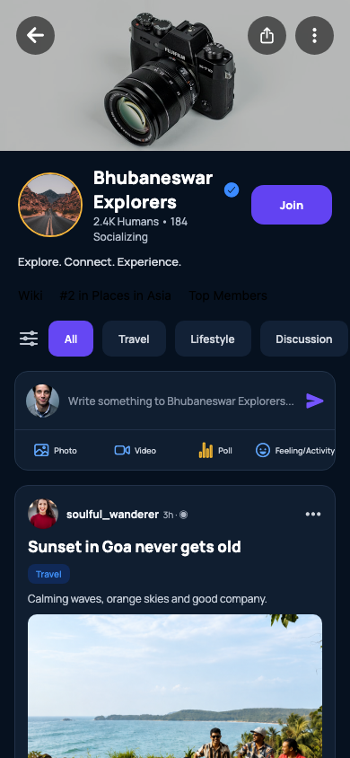
- Cover, identity, human/online counts, and join state.
- All, Travel, Lifestyle, Discussion, and General filters.
- Composer publishes to the selected timeline.
- Photo, video, poll, and feeling actions.
- Like updates reaction totals.
Live production delivery record
Verified social data model
| Resource | Live verification | Protection |
|---|---|---|
| Vibes / comments / likes | Three Storage-backed Vibes; UI comment persisted | Public read; self-authored writes |
| Direct chat | Two users sent and received in one deduplicated thread | Participant-only RLS |
| Group chat | Two groups with three real memberships | Member-only RLS; admin creation |
| Stories | Three uploads plus view receipt | Expiry and viewer ownership |
| Communities | Memberships, rules, posts and media schema live | Owner/member policies |
Release artifacts
supabase/migrationssrc/services/wenitro.ts63-second walkthrough videoreport/index.html
The production Vercel project is configured with the Supabase project URL and publishable key. No service-role or secret database credential is present in the client.